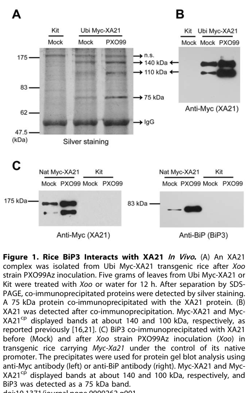

XA21 (Q2R2D5) is the rice cell-surface leucine-rich-repeat receptor kinase (LRR-RLK) / pattern-recognition receptor (PRR) that confers broad-spectrum resistance to the Gram-negative bacterial pathogen Xanthomonas oryzae pv. oryzae (Xoo), the causal agent of bacterial leaf blight. It has the canonical immune-PRR architecture: a signal peptide, an extracellular ectodomain of ~23 leucine-rich repeats (residues ~25-665), a single transmembrane helix (666-686), a juxtamembrane region, and a cytoplasmic non-RD serine/threonine protein kinase domain (720-1019) (UniProt Q2R2D5; Chen & Ronald 2011, file deep-research). XA21 is synthesized/processed through the endoplasmic reticulum, is heavily N-glycosylated, and localizes to the plasma membrane and the cortical/perinuclear ER (PMID:22735448). It perceives a bacterial tyrosine-sulfated peptide ligand: current consensus identifies the activator as the sulfated RaxX peptide (a synthetic 21-aa RaxX21-sY peptide is sufficient; earlier literature used the Ax21/AxYS22 nomenclature) (Pruitt et al. 2015, file deep-research; PMID:22735448). Upon ligand perception, XA21 releases the negative regulator XB24 (an ATPase) and is activated; signaling is co-regulated by the somatic-embryogenesis receptor kinase OsSERK2, which forms a constitutive complex with XA21 and undergoes bidirectional transphosphorylation with it (PMID:24482436). XA21 also undergoes proteolytic cleavage that releases the intracellular kinase domain, which carries a functional nuclear localization signal (residues 689-694) and translocates to the nucleus where it binds the transcriptional regulator OsWRKY62/XB10; nuclear translocation is required for the XA21-mediated immune response (PMID:22735448). The net biological output is activation of pattern-triggered immunity / defense response to the bacterium Xoo. The core function of XA21 is therefore as a transmembrane immune receptor serine/threonine kinase that detects a bacterial signature and triggers antibacterial defense signaling.
| GO Term | Evidence | Action | Reason |
|---|---|---|---|
|
GO:0005634
nucleus
|
IBA
GO_REF:0000033 |
ACCEPT |
Summary: IBA annotation: the processed XA21 intracellular kinase domain translocates to the nucleus, where it acts on a transcriptional regulator. Directly confirmed in rice.
Reason: Supported by direct experimental evidence. After ligand (AxYS22/RaxX) recognition, XA21 is cleaved and the intracellular kinase domain accumulates in the nucleus (XA21-GFP imaging in protoplasts and nuclear-enriched fractions in planta), where it interacts with the OsWRKY62 transcriptional regulator; nuclear translocation is required for XA21-mediated immunity [PMID:22735448]. The "is_active_in" qualifier is appropriate because the nuclear-localized kinase is functionally required there.
Supporting Evidence:
PMID:22735448
In vivo cleavage of XA21 and translocalization of the intracellular kinase domain to the nucleus is required for the XA21-mediated immune response.
file:ORYSJ/XA21/XA21-deep-research-falcon.md
the kinase containing fragment is translocated into the nucleus
|
|
GO:0005886
plasma membrane
|
IBA
GO_REF:0000033 |
ACCEPT |
Summary: IBA annotation: XA21 is a plasma-membrane single-pass receptor kinase. This is the site of ligand perception and the canonical location of the active receptor.
Reason: Strongly supported. XA21-GFP localizes to the plasma membrane (and the cortical/perinuclear ER) in the absence of ligand, and the mature receptor perceives its bacterial ligand at the cell surface [PMID:22735448]. Plasma-membrane localization is the defining feature of a cell-surface PRR/LRR-RLK and is consistent with the UniProt subcellular location.
Supporting Evidence:
PMID:22735448
XA21-GFP is localized both to the plasma membrane and the cortical and perinuclear endoplasmic reticulum in the absence of AxYS22
file:ORYSJ/XA21/XA21-deep-research-falcon.md
localizes primarily to the endoplasmic reticulum (ER) and also to the plasma membrane (PM)
|
|
GO:0032541
cortical endoplasmic reticulum
|
IBA
GO_REF:0000033 |
ACCEPT |
Summary: IBA annotation: XA21 is present in the cortical ER, reflecting ER biogenesis/quality control of the receptor before transit to the plasma membrane.
Reason: Supported by direct rice imaging: XA21-GFP localizes to the cortical and perinuclear ER in addition to the plasma membrane [PMID:22735448]. XA21 maturation depends on ER folding/quality control (BiP3 chaperone regulates XA21 stability and cleavage), so ER localization is biologically meaningful, not artefactual [file deep-research].
Supporting Evidence:
PMID:22735448
XA21-GFP is localized both to the plasma membrane and the cortical and perinuclear endoplasmic reticulum in the absence of AxYS22
file:ORYSJ/XA21/XA21-deep-research-falcon.md
is N-glycosylated, localizes predominantly to the ER but also to the plasma membrane
|
|
GO:1990578
perinuclear endoplasmic reticulum membrane
|
IBA
GO_REF:0000033 |
ACCEPT |
Summary: IBA annotation: XA21 is present in the perinuclear ER membrane, consistent with its ER-resident pool during biogenesis.
Reason: Supported by the same direct imaging evidence as the cortical-ER annotation: XA21-GFP localizes to the perinuclear (as well as cortical) ER [PMID:22735448]. UniProt records "Present in cortical and perinuclear endoplasmic reticulum."
Supporting Evidence:
PMID:22735448
XA21-GFP is localized both to the plasma membrane and the cortical and perinuclear endoplasmic reticulum in the absence of AxYS22
|
|
GO:0004672
protein kinase activity
|
IEA
GO_REF:0000002 |
ACCEPT |
Summary: IEA annotation from InterPro (IPR000719 protein kinase domain). XA21 carries a cytoplasmic protein kinase domain; broad but correct parent of its Ser/Thr kinase MF.
Reason: Correct but generic. XA21 has a bona fide cytoplasmic protein kinase domain (residues 720-1019, PROSITE PS50011) and is autophosphorylated on Ser/Thr residues [UniProt Q2R2D5]. "Protein kinase activity" is the broad parent; the more specific "protein serine/threonine kinase activity" (GO:0004674) and the receptor-specific term (GO:0004675, proposed below) better capture the activity, but this parent IEA is not incorrect.
Supporting Evidence:
file:ORYSJ/XA21/XA21-deep-research-falcon.md
a single transmembrane helix, a juxtamembrane region, and a cytosolic kinase domain
|
|
GO:0004674
protein serine/threonine kinase activity
|
IEA
GO_REF:0000003 |
ACCEPT |
Summary: IEA annotation (EC 2.7.11.1 mapping). XA21 is a Ser/Thr protein kinase that autophosphorylates and transphosphorylates its co-receptor OsSERK2.
Reason: Correct and well supported. UniProt assigns EC 2.7.11.1 and lists XA21 in the Ser/Thr protein kinase family; XA21 autophosphorylates on serine/threonine residues and undergoes bidirectional Ser/Thr transphosphorylation with OsSERK2 in vitro [PMID:24482436]. This is the appropriate catalytic MF. The receptor-context term GO:0004675 is proposed below as a more informative refinement.
Supporting Evidence:
PMID:24482436
OsSERK2 and XA21 undergo bidirectional transphosphorylation in vitro
file:ORYSJ/XA21/XA21-deep-research-falcon.md
Belongs to the protein kinase superfamily. Ser/Thr protein
|
|
GO:0005524
ATP binding
|
IEA
GO_REF:0000002 |
ACCEPT |
Summary: IEA annotation from InterPro (IPR017441, protein kinase ATP-binding site). XA21 binds ATP via its kinase domain to catalyze phosphotransfer.
Reason: Correct. The XA21 kinase domain contains a canonical ATP-binding motif (UniProt BINDING 726-734 and 748; PROSITE PS00107), required for autophosphorylation and transphosphorylation. Mutating the conserved ATP-binding lysine (K736E) abolishes XA21 kinase activity and its kinase-dependent interactions [PMID:24482436]. ATP binding is an integral part of the kinase MF.
Supporting Evidence:
PMID:24482436
by either mutating the conserved lysine (K) required for ATP binding and catalytic activity
|
|
GO:0005634
nucleus
|
IEA
GO_REF:0000044 |
ACCEPT |
Summary: IEA annotation (UniProt SubCell mapping) duplicating the nuclear localization that is directly demonstrated for the processed XA21 kinase domain.
Reason: Correct and redundant with the IBA/IDA nucleus annotations. The processed XA21 intracellular kinase domain carries a functional NLS and translocates to the nucleus after ligand recognition [PMID:22735448]. Duplicate annotations with different evidence codes are acceptable.
Supporting Evidence:
PMID:22735448
this intracellular domain carries a functional nuclear localization sequence
|
|
GO:0005789
endoplasmic reticulum membrane
|
IEA
GO_REF:0000044 |
ACCEPT |
Summary: IEA annotation (UniProt SubCell mapping) for ER membrane localization; duplicates the directly demonstrated ER localization.
Reason: Correct. XA21 is a single-pass ER/PM membrane protein; XA21-GFP localizes to the cortical and perinuclear ER, and XA21 biogenesis/quality control occurs in the ER [PMID:22735448; file deep-research]. Consistent with the UniProt subcellular location.
Supporting Evidence:
file:ORYSJ/XA21/XA21-deep-research-falcon.md
is N-glycosylated, localizes predominantly to the ER but also to the plasma membrane
|
|
GO:0005886
plasma membrane
|
IEA
GO_REF:0000044 |
ACCEPT |
Summary: IEA annotation (UniProt SubCell mapping) for plasma-membrane localization; duplicates the IBA/IDA plasma-membrane annotations.
Reason: Correct and consistent with direct imaging: the mature XA21 receptor is at the plasma membrane, where it perceives its bacterial ligand [PMID:22735448]. Duplicate of the experimentally supported localization.
Supporting Evidence:
PMID:22735448
XA21-GFP is localized both to the plasma membrane and the cortical and perinuclear endoplasmic reticulum in the absence of AxYS22
|
|
GO:0106310
protein serine kinase activity
|
IEA
GO_REF:0000116 |
ACCEPT |
Summary: IEA annotation (RHEA mapping, RHEA:17989) for protein serine kinase activity; a sub-aspect of the Ser/Thr kinase activity of XA21.
Reason: Correct. XA21 autophosphorylates on serine residues (UniProt MOD_RES Ser698/Ser701) and is a Ser/Thr kinase; the RHEA-mapped serine-kinase reaction is part of its catalytic MF [UniProt Q2R2D5; PMID:24482436]. Duplicates the ISS annotation to the same term.
Supporting Evidence:
PMID:24482436
OsSERK2 and XA21 undergo bidirectional transphosphorylation in vitro
|
|
GO:0106310
protein serine kinase activity
|
ISS
GO_REF:0000024 |
ACCEPT |
Summary: ISS annotation (by similarity to UniProtKB:Q1MX30) for protein serine kinase activity; duplicates the RHEA IEA annotation to the same term.
Reason: Correct, by curator-judged similarity to the characterized ortholog Q1MX30 and consistent with XA21's demonstrated Ser/Thr kinase activity and serine autophosphorylation sites [UniProt Q2R2D5; PMID:24482436]. Duplicate annotations with different evidence codes are acceptable.
Supporting Evidence:
file:ORYSJ/XA21/XA21-deep-research-falcon.md
Belongs to the protein kinase superfamily. Ser/Thr protein
|
|
GO:0005515
protein binding
|
IPI
PMID:24482436 An XA21-associated kinase (OsSERK2) regulates immunity media... |
MODIFY |
Summary: IPI annotation (with UniProtKB:Q7XV05 = OsSERK2) for the constitutive XA21-OsSERK2 receptor-kinase complex. "Protein binding" is uninformative; the interaction defines XA21's role in a co-receptor immune-signaling complex.
Reason: The interaction is real and important - OsSERK2 forms a constitutive complex with XA21 in planta, the kinase domains interact in a kinase-activity-dependent manner, and OsSERK2 is required for XA21-mediated immunity [PMID:24482436]. However, the bare term "protein binding" (GO:0005515) is discouraged because it conveys no functional information. The biologically informative molecular function captured by this co-receptor interaction is XA21 acting as a transmembrane immune receptor kinase that transduces a signal across the membrane via its associated SERK kinase; this is better represented by "transmembrane receptor protein serine/threonine kinase activity" (GO:0004675) and "immune receptor activity" (GO:0140375), proposed below.
Proposed replacements:
transmembrane receptor protein serine/threonine kinase activity
Supporting Evidence:
PMID:24482436
OsSERK2 and XA21 form constitutive heterodimeric complexes in planta
PMID:24482436
OsSERK2 interacts with the intracellular domains of each immune receptor in the yeast two-hybrid system in a kinase activity-dependent manner
|
|
GO:0005515
protein binding
|
IPI
PMID:22735448 Cleavage and nuclear localization of the rice XA21 immune re... |
MODIFY |
Summary: IPI annotation (with UniProtKB:Q6EPZ0 = OsWRKY62/XB10) for the nuclear interaction between the processed XA21 kinase domain and the OsWRKY62 transcriptional regulator. "Protein binding" is uninformative.
Reason: The interaction is genuine and mechanistically central: BiFC assays show the XA21 intracellular domain interacts with the OsWRKY62 transcriptional regulator exclusively in the nucleus, linking receptor activation to transcriptional reprogramming [PMID:22735448]. But the bare "protein binding" term (GO:0005515) is discouraged. The functional essence - XA21 transducing an immune signal to a downstream transcriptional regulator - is better captured by the immune-receptor/defense process terms. As a molecular function, "immune receptor activity" (GO:0140375; defined as receiving a signal and transmitting it in a cell to initiate an immune response) is the informative replacement; the OsWRKY62 binding is the means by which the signal is transmitted in the nucleus.
Proposed replacements:
immune receptor activity
Supporting Evidence:
PMID:22735448
the XA21 intracellular domain interacts with the OsWRKY62 transcriptional regulator exclusively in the nucleus of rice protoplasts
|
|
GO:0005634
nucleus
|
IDA
PMID:22735448 Cleavage and nuclear localization of the rice XA21 immune re... |
ACCEPT |
Summary: IDA annotation: the processed XA21 intracellular kinase domain localizes to the nucleus after ligand recognition. Directly demonstrated.
Reason: Directly supported. Treatment with active AxYS22 (or Xoo supernatant) triggers accumulation of XA21-GFP inside the nucleus, the intracellular domain is detected in nuclei-enriched fractions in planta, and an intact NLS is required for nuclear localization and immune function [PMID:22735448]. Duplicates the IBA/IEA nucleus annotations.
Supporting Evidence:
PMID:22735448
triggers significant accumulation of the XA21-GFP inside the nucleus
|
|
GO:0005789
endoplasmic reticulum membrane
|
IDA
PMID:22735448 Cleavage and nuclear localization of the rice XA21 immune re... |
ACCEPT |
Summary: IDA annotation: XA21 localizes to the ER membrane (cortical/perinuclear). Directly demonstrated by XA21-GFP imaging.
Reason: Directly supported by XA21-GFP imaging showing cortical and perinuclear ER localization, consistent with ER-dependent biogenesis/quality control of the receptor [PMID:22735448; file deep-research]. Duplicates the IBA/IEA ER annotations.
Supporting Evidence:
PMID:22735448
XA21-GFP is localized both to the plasma membrane and the cortical and perinuclear endoplasmic reticulum in the absence of AxYS22
|
|
GO:0005886
plasma membrane
|
IDA
PMID:22735448 Cleavage and nuclear localization of the rice XA21 immune re... |
ACCEPT |
Summary: IDA annotation: XA21 localizes to the plasma membrane, the site of the mature cell-surface receptor. Directly demonstrated.
Reason: Directly supported: XA21-GFP localizes to the plasma membrane in the absence of ligand [PMID:22735448]. This is the canonical site of the cell-surface PRR. Duplicates the IBA/IEA plasma-membrane annotations.
Supporting Evidence:
PMID:22735448
XA21-GFP is localized both to the plasma membrane and the cortical and perinuclear endoplasmic reticulum in the absence of AxYS22
|
|
GO:0032541
cortical endoplasmic reticulum
|
IDA
PMID:22735448 Cleavage and nuclear localization of the rice XA21 immune re... |
ACCEPT |
Summary: IDA annotation: XA21 localizes to the cortical ER. Directly demonstrated by XA21-GFP imaging.
Reason: Directly supported by XA21-GFP imaging showing cortical-ER localization [PMID:22735448]. Duplicates the IBA cortical-ER annotation.
Supporting Evidence:
PMID:22735448
XA21-GFP is localized both to the plasma membrane and the cortical and perinuclear endoplasmic reticulum in the absence of AxYS22
|
|
GO:1990578
perinuclear endoplasmic reticulum membrane
|
IDA
PMID:22735448 Cleavage and nuclear localization of the rice XA21 immune re... |
ACCEPT |
Summary: IDA annotation: XA21 localizes to the perinuclear ER membrane. Directly demonstrated by XA21-GFP imaging.
Reason: Directly supported by XA21-GFP imaging showing perinuclear-ER localization [PMID:22735448]. Duplicates the IBA perinuclear-ER annotation.
Supporting Evidence:
PMID:22735448
XA21-GFP is localized both to the plasma membrane and the cortical and perinuclear endoplasmic reticulum in the absence of AxYS22
|
|
GO:0006952
defense response
|
IEA
GO_REF:0000043 |
MODIFY |
Summary: SPKW (GO_REF:0000043) annotation derived from the UniProt keyword "Plant defense"; snapshot-only, removed in the current GOA release. XA21 is a genuine immune receptor that confers broad-spectrum resistance to the bacterium Xoo, so the essence of "defense response" is biologically CORRECT - but it is a high-level, non-specific parent term.
Reason: This is the "R-protein/PRR correct-but-broad" case (Tier A by keyword; verdict correct-but-broad). XA21 genuinely functions in immunity: it is "the rice XA21 receptor confers broad-spectrum immunity to the Gram-negative bacterial pathogen, Xanthomonas oryzae pv. oryzae" and nuclear translocation of its kinase domain is "required for the XA21-mediated immune response" [PMID:22735448]; silencing the co-receptor OsSerk2 compromises XA21-mediated resistance to Xoo [PMID:24482436]. So removing the term outright would discard correct biology - and notably it was the ONLY biological-process annotation XA21 carried, so its removal leaves the gene with no process term describing its central role. Rather than ACCEPT the vague parent or REMOVE correct biology, the annotation should be MODIFIED to the specific, informative process term "defense response to bacterium" (GO:0042742), which precisely captures XA21's antibacterial immune function against Xoo. (The even more specific "defense response to Gram-negative bacterium" GO:0050829 is proposed below as a NEW term, since Xoo is Gram-negative.)
Proposed replacements:
defense response to bacterium
Supporting Evidence:
PMID:22735448
The rice XA21 receptor confers broad-spectrum immunity to the Gram-negative bacterial pathogen, Xanthomonas oryzae pv. oryzae
PMID:24482436
The rice XA21 immune receptor kinase and the structurally related XA3 receptor confer immunity to Xanthomonas oryzae pv. oryzae (Xoo), the causal agent of bacterial leaf blight.
file:ORYSJ/XA21/XA21-deep-research-falcon.md
a leucine-rich repeat receptor-like kinase (LRR-RLK)/receptor kinase implicated in innate immunity
|
|
GO:0004675
transmembrane receptor protein serine/threonine kinase activity
|
IDA
PMID:24482436 An XA21-associated kinase (OsSERK2) regulates immunity media... |
NEW |
Summary: XA21 is a single-pass transmembrane receptor that combines an extracellular ligand-sensing ectodomain with a cytoplasmic Ser/Thr kinase, transducing a bacterial signal across the plasma membrane. This receptor-context kinase MF is more informative than the generic kinase terms in current GOA.
Reason: XA21 has the exact architecture this term describes (GO:0004675: "Combining with a signal and transmitting the signal from one side of the membrane to the other... by catalysis of... ATP + protein serine = ADP + protein serine phosphate"): an extracellular LRR ectodomain, a single TM helix, and a cytoplasmic Ser/Thr kinase domain [UniProt Q2R2D5; file deep-research]. It is described as "The XA21 receptor kinase" / "immune receptor kinase" that transduces an extracellular bacterial signal, undergoes autophosphorylation, and transphosphorylates its co-receptor OsSERK2 [PMID:24482436]. This is the informative MF that the two discouraged "protein binding" IPI annotations and the generic kinase IEAs should resolve to. IDA is justified by the in vitro transphosphorylation assays with OsSERK2.
Supporting Evidence:
PMID:24482436
The rice XA21 immune receptor kinase and the structurally related XA3 receptor confer immunity to Xanthomonas oryzae pv. oryzae
PMID:24482436
OsSERK2 and XA21 undergo bidirectional transphosphorylation in vitro
file:ORYSJ/XA21/XA21-deep-research-falcon.md
extracellular LRR region (~23 LRRs reported in one modeling study), a single transmembrane helix, a juxtamembrane region, and a cytosolic kinase domain
|
|
GO:0140375
immune receptor activity
|
IMP
PMID:22735448 Cleavage and nuclear localization of the rice XA21 immune re... |
NEW |
Summary: XA21 is a pattern-recognition receptor that receives a bacterial signal (sulfated RaxX/AxYS22 peptide) and transmits it to initiate an immune response. This is the defining molecular function of XA21 and is absent from current GOA.
Reason: GO:0140375 is defined as "Receiving a signal and transmitting it in a cell to initiate an immune response" - exactly XA21's role as a PRR. XA21 perceives the conserved bacterial signature (Ax21/AxYS22, now RaxX) and triggers the immune response; cleavage and nuclear translocation of the kinase domain (interacting with OsWRKY62) is required for the XA21-mediated immune response [PMID:22735448], and the co-receptor OsSERK2 is required for receptor function [PMID:24482436]. IMP is justified by the loss-of-immune- function phenotypes (NES-fusion and OsSerk2-silencing both abolish XA21-mediated resistance). The closely related "innate immune receptor activity" (GO:0140376) would also be appropriate.
Supporting Evidence:
PMID:22735448
The rice XA21 receptor confers broad-spectrum immunity to the Gram-negative bacterial pathogen, Xanthomonas oryzae pv. oryzae upon recognition of a small protein, Ax21, that is conserved in all Xanthomonas species and related genera.
file:ORYSJ/XA21/XA21-deep-research-falcon.md
XA21 functions as a cell-surface PRR that initiates pattern-triggered immunity (PTI) upon perception of a conserved microbial molecule
|
|
GO:0050829
defense response to Gram-negative bacterium
|
IMP
PMID:22735448 Cleavage and nuclear localization of the rice XA21 immune re... |
NEW |
Summary: XA21 confers resistance specifically to the Gram-negative bacterium Xanthomonas oryzae pv. oryzae. The Gram-negative-specific defense-response term is the most precise process annotation for XA21's biology.
Reason: Xoo is a Gram-negative bacterium, and XA21 confers "broad-spectrum immunity to the Gram-negative bacterial pathogen, Xanthomonas oryzae pv. oryzae" [PMID:22735448]. Loss of XA21 function (NES fusion blocking nuclear translocation, or OsSerk2 silencing) results in enhanced susceptibility / loss of resistance to Xoo [PMID:22735448; PMID:24482436], supporting an IMP "involved_in" defense-response annotation. This is more specific than the proposed MODIFY target GO:0042742 and most accurately reflects XA21's antibacterial role. IMP is justified by the loss-of-resistance phenotypes.
Supporting Evidence:
PMID:22735448
The rice XA21 receptor confers broad-spectrum immunity to the Gram-negative bacterial pathogen, Xanthomonas oryzae pv. oryzae
PMID:24482436
the double transgenic plants carrying Xa21 and silenced for OsSerk2 are susceptible, showing typical long water-soaked lesions
|
|
GO:0009595
detection of biotic stimulus
|
IMP
PMID:22735448 Cleavage and nuclear localization of the rice XA21 immune re... |
NEW |
Summary: XA21 detects a biotic (bacterial) stimulus - the sulfated RaxX/AxYS22 peptide derived from Xoo - and converts it into an intracellular signal. This perception step is the upstream process underlying XA21's immune function.
Reason: GO:0009595 is defined as "The series of events in which a biotic stimulus, one caused or produced by a living organism, is received and converted into a molecular signal." XA21 perceives the conserved bacterial peptide (Ax21/AxYS22, now RaxX), and recognition triggers receptor accumulation, cleavage and nuclear translocation that are required for immunity [PMID:22735448; file deep-research]. This captures the detection/perception role distinct from the downstream defense-response output. IMP is justified by the ligand-recognition-dependent activation and loss-of-function immune phenotypes.
Supporting Evidence:
PMID:22735448
XA21 binds a conserved sulphated peptide, called AxYS22 derived from the Xoo Ax21 (activator of XA21-mediated immunity) protein
file:ORYSJ/XA21/XA21-deep-research-falcon.md
a synthetic sulfated 21-aa peptide (RaxX21-sY) is sufficient to trigger hallmark immune responses
|
Q: Does XA21 directly bind the sulfated RaxX/RaxX21-sY peptide via its LRR ectodomain, or is perception mediated indirectly through an additional binding protein or co-receptor?
Suggested experts: Pamela C. Ronald
Q: Is proteolytic cleavage and nuclear translocation of the XA21 kinase domain a general requirement across LRR-RLK immune receptors, or specific to XA21, and what protease mediates the cleavage?
Suggested experts: Chang-Jin Park
Experiment: Quantitative binding assays (e.g. microscale thermophoresis or surface plasmon resonance) of the purified XA21 LRR ectodomain (and the OsSERK2 ectodomain) against sulfated RaxX21-sY versus non-sulfated peptide, to establish whether XA21 is the direct receptor for the sulfated ligand.
Hypothesis: The XA21 LRR ectodomain directly and specifically binds the tyrosine-sulfated RaxX peptide, and binding is abolished by loss of sulfation.
Type: in vitro ligand-binding biochemistry
Experiment: Generate transgenic rice expressing a non-cleavable XA21 variant and a kinase-dead (K736E) XA21 variant, and quantify Xoo resistance, defense-gene induction and OsWRKY62 nuclear interaction, to dissect the contributions of cleavage versus kinase activity to immune signaling.
Hypothesis: Both kinase activity and ligand-triggered cleavage/nuclear translocation are required for full XA21-mediated defense response to Xoo.
Type: structure-function transgenic complementation and pathogen-challenge assay
The research report should be a detailed narrative explaining the function, biological processes, and localization of the gene product. Citations should be given for all claims.
You should prioritize authoritative reviews and primary scientific literature when conducting research. You can supplement
this with annotations you find in gene/protein databases, but these can be outdated or inaccurate.
We are specifically interested in the primary function of the gene - for enzymes, what reaction is catalyzed, and what is the substrate specificity? For transporters, what is the substrate? For structural proteins or adapters, what is the broader structural role? For signaling molecules, what is the role in the pathway.
We are interested in where in or outside the cell the gene product carries out its function.
We are also interested in the signaling or biochemical pathways in which the gene functions. We are less interested in broad pleiotropic effects, except where these elucidate the precise role.
Include evidence where possible. We are interested in both experimental evidence as well as inference from structure, evolution, or bioinformatic analysis. Precise studies should be prioritized over high-throughput, where available.
The target protein is XA21 from Oryza sativa subsp. japonica (rice), a leucine-rich repeat receptor-like kinase (LRR-RLK)/receptor kinase implicated in innate immunity. Rice genomics literature explicitly links Xa21 to Os11g0569733 / LOC_Os11g36180 on chromosome 11, consistent with the UniProt context and with an LRR-RLK architecture used in pathogen perception. (nanayakkara2018haplotypediversityanalysis pages 1-3)
XA21 should be distinguished from other “Xa” bacterial blight loci that encode different protein classes (e.g., NBS-LRR or SWEET-related susceptibility genes) by its defining features: extracellular LRR ectodomain + single TM segment + juxtamembrane region + cytosolic Ser/Thr kinase (non-RD) domain, and its documented activation by a sulfated microbial peptide ligand. (pruitt2015thericeimmune pages 1-2, joshi2020advancesinthe pages 6-7)
XA21 functions as a cell-surface PRR that initiates pattern-triggered immunity (PTI) upon perception of a conserved microbial molecule, leading to downstream defense signaling. (chen2011innateimmunityin pages 2-3)
XA21 belongs to LRR-RLKs that perceive extracellular ligands via LRRs and transduce signals through a cytosolic kinase domain. XA21 is described as a non-RD kinase, a motif class associated with innate immune signaling. (pruitt2015thericeimmune pages 1-2, chen2011innateimmunityin pages 1-2)
Computational and review descriptions converge on an XA21 architecture comprising: extracellular LRR region (~23 LRRs reported in one modeling study), a single transmembrane helix, a juxtamembrane region, and a cytosolic kinase domain. These features align with UniProt’s LRR and kinase domain annotations and are typical of immune PRRs. (mubassir2020comprehensiveinsilico pages 1-2, chen2011innateimmunityin pages 1-2)
A 2024 study directly tested whether XA21-mediated resistance is dose dependent, generating multiple HA-tagged XA21 transgenic rice lines and showing that differences in XA21 accumulation correlated with differences in resistance to Xoo strain PXO99. Importantly, the authors report that measurements of four agronomic traits indicate that yield is unlikely to be impacted by XA21 expression level in their tested lines, a practical consideration for deployment. (zhang2024xa21mediatedresistanceto pages 1-2)
A 2024 study in Thailand examined a Xa21-introgressed version of a widely grown cultivar (‘Phitsanulok 2’, PSL2) and tested salicylic acid (SA) pretreatment (2 mM). SA pretreatment was associated with increased Xa21 expression prior to infection and improved disease outcomes, providing actionable evidence for combined genetic + elicitor-based management. (meesa2024salicylicacidapplication pages 1-2)
Current consensus identifies the microbial activator of XA21 as RaxX, a bacterial protein whose single tyrosine residue (Y41) must be sulfated by the bacterial sulfotransferase RaxST. Sulfated, but not nonsulfated, RaxX activates XA21-dependent immune responses; a synthetic sulfated 21-aa peptide (RaxX21-sY) is sufficient to trigger hallmark immune responses. Xoo strains lacking raxX or with mutations in the key tyrosine can evade XA21-mediated immunity. (pruitt2015thericeimmune pages 1-2)
Note on terminology: older literature discussed “Ax21/AxYS22” as the elicitor; later work (above) identified RaxX as the relevant ligand for XA21 activation. (chen2011innateimmunityin pages 2-3, pruitt2015thericeimmune pages 1-2)
A key mechanistic insight is that XA21 is N-glycosylated, localizes primarily to the endoplasmic reticulum (ER) and also to the plasma membrane (PM), and undergoes proteolytic cleavage producing a full-length band (~140 kDa) and a cleavage product (~110 kDa). Overexpression of the ER chaperone BiP3 reduces XA21 stability and inhibits its cleavage, indicating that ER quality control influences XA21 accumulation and processing. This provides strong evidence that XA21 biogenesis and maturation depend on ER folding/processing before functional activity at/near the PM. (park2010overexpressionofthe pages 1-2)
Visual evidence supporting these claims (co-IP interaction/cleavage, microscopy localization, glycosylation shift, and model schematic) was retrieved from the same work. (park2010overexpressionofthe media f52def4e, park2010overexpressionofthe media 7d43c080, park2010overexpressionofthe media 52691bd3, park2010overexpressionofthe media cf98f529)
XA21 signaling is regulated by multiple interacting proteins that tune activation amplitude and duration:
XB24 (ATPase): XB24 binds XA21 (interaction requires XA21 kinase activity) and promotes XA21 autophosphorylation via its ATPase activity; genetically, XB24 silencing enhances XA21 immunity while XB24 overexpression compromises immunity. The XA21–XB24 association dissociates upon exposure to active ligand activity, consistent with ligand-triggered release of negative regulation. (chen2010anatpasepromotes pages 1-2, chen2010anatpasepromotes pages 2-2)
XB15 (PP2C phosphatase): XB15 is a PP2C that interacts with the XA21 intracellular region; autophosphorylated XA21 can be dephosphorylated by XB15 in a temporal- and dosage-dependent manner. Mutants show enhanced resistance and strong defense phenotypes, while XB15 overexpression compromises resistance, supporting XB15 as a negative regulator that terminates/attenuates XA21 signaling. (chen2011innateimmunityin pages 2-3)
XB3 (E3 ubiquitin ligase): XB3 is a RING-type E3 ubiquitin ligase that interacts with XA21 and is described as a substrate for XA21 kinase activity. Reduced Xb3 expression compromises resistance and lowers XA21 protein levels, indicating XB3 is required for full accumulation of XA21 and full resistance. (chen2011innateimmunityin pages 2-3)
Collectively, these findings support a model in which XA21 activation involves phosphorylation state transitions, release of negative regulation (XB24), and control of receptor abundance and signaling components through dephosphorylation (XB15) and ubiquitin-related processes (XB3). (chen2011innateimmunityin pages 2-3, chen2010anatpasepromotes pages 1-2)
XA21 has long been used in rice improvement; recent work continues to focus on reliable, high-resolution markers and characterization of allele diversity.
An intragenic marker ABUOP0001, targeting a 19-bp InDel in the XA21 ectodomain, was proposed for MAS: it distinguishes resistant vs susceptible amplicons (200 bp vs 181 bp) and is positioned to reduce linkage drag relative to upstream linked markers (e.g., pTA248). The study reported field phenotyping where 14 accessions were highly resistant and 1 was intermediate among those carrying the resistant allele, and an in silico screen identified the resistance allele in 1,675 accessions from the 3K Rice Genomes dataset, supporting broad germplasm deployment potential. (nanayakkara2019anovelintragenic pages 9-12, nanayakkara2019anovelintragenic pages 1-4)
In Thai cultivar PSL2, Xa21 introgression lines (BC4F6) were tested under bacterial blight challenge. SA pretreatment (2 mM) reduced pathogen proliferation and lesion length (details below), illustrating a real-world “stacking” of genetic resistance with priming/elicitor-based management. (meesa2024salicylicacidapplication pages 1-2, meesa2024salicylicacidapplication pages 8-11)
The 2024 dose-dependence study mapped multiple independent insertion events and assessed resistance vs XA21 accumulation, and it reported that measurements of four agronomic traits suggest yield is unlikely to be affected by XA21 expression level in their tested materials, supporting feasibility of transgenic implementations when regulatory environments permit. (zhang2024xa21mediatedresistanceto pages 1-2)
In Xa21-introgressed PSL2 (BC4F6 lines) challenged with Xoo16PK002, SA pretreatment produced the following quantitative outcomes:
These quantitative results provide directly actionable benchmarks for resistance performance under the described assay conditions. (meesa2024salicylicacidapplication pages 1-2, meesa2024salicylicacidapplication pages 8-11)
A diversity analysis of Xa21 across 1,618 accessions reported 13 confirmed haplotypes among 1,341 accessions, with haplotype diversity = 0.8203 and nucleotide diversity = 0.15448. A notable 19-bp InDel causes truncated protein forms and was reported to represent ~45% of accessions in that dataset, illustrating substantial natural variation relevant to functional alleles and marker design. (nanayakkara2018haplotypediversityanalysis pages 1-3)
Authoritative reviews and high-citation mechanistic papers frame XA21 as a central example of monocot PRR immunity and emphasize (i) ER-dependent maturation/quality control for receptor accumulation, (ii) phosphorylation-dependent regulation and negative feedback by phosphatases, and (iii) the value of PRRs such as XA21 for engineering/transferring recognition and for breeding durable resistance. (chen2011innateimmunityin pages 2-3, holton2015thephylogeneticallyrelatedpattern pages 2-4)
The following table consolidates identity, mechanism, localization, regulators, applications, and quantitative findings (with URLs and publication dates).
| Feature | Summary | Key evidence/citations | Primary source (authors/year/journal) | URL | Publication date |
|---|---|---|---|---|---|
| Identity | XA21 in Oryza sativa subsp. japonica corresponds to locus Os11g0569733 / LOC_Os11g36180 and encodes a membrane-localized LRR receptor-like kinase/receptor kinase conferring resistance to Xanthomonas oryzae pv. oryzae (Xoo); it was introgressed from O. longistaminata. | (nanayakkara2018haplotypediversityanalysis pages 1-3, pruitt2015thericeimmune pages 1-2, joshi2020advancesinthe pages 6-7) | Nanayakkara et al. 2018, Tropical Agricultural Research; Pruitt et al. 2015, Science Advances | https://doi.org/10.4038/tar.v30i1.8278 ; https://doi.org/10.1126/sciadv.1500245 | 2018-12 ; 2015-07 |
| Domains | The protein matches the UniProt annotation as an LRR-RLK: extracellular LRR ectodomain, single transmembrane helix, juxtamembrane region, and intracellular non-RD serine/threonine kinase domain; modeling work describes ~23 LRRs. | (mubassir2020comprehensiveinsilico pages 1-2, chen2011innateimmunityin pages 1-2) | Mubassir et al. 2020, RSC Advances; Chen & Ronald 2011, Trends in Plant Science | https://doi.org/10.1039/d0ra01396j ; https://doi.org/10.1016/j.tplants.2011.04.003 | 2020-04 ; 2011-08 |
| Ligand | Current accepted ligand is the Xoo tyrosine-sulfated peptide RaxX; sulfation of the key Tyr residue is required, and synthetic RaxX21-sY is sufficient to trigger XA21-dependent immune responses. Earlier literature referred to Ax21; this was superseded by the RaxX model. | (pruitt2015thericeimmune pages 1-2, hans2026salicylicaciddriven pages 2-3, chen2011innateimmunityin pages 2-3) | Pruitt et al. 2015, Science Advances; Chen & Ronald 2011, Trends in Plant Science | https://doi.org/10.1126/sciadv.1500245 ; https://doi.org/10.1016/j.tplants.2011.04.003 | 2015-07 ; 2011-08 |
| Co-receptors/regulators | XA21 signaling is regulated by OsSERK2 and multiple XA21-binding proteins: XB24 (ATPase; promotes autophosphorylation and keeps receptor inactive before activation), XB15 (PP2C; dephosphorylates activated XA21 and negatively regulates immunity), XB3 (RING-type E3 ligase; phosphorylated by XA21 and required for full resistance/protein accumulation). | (jiang2026resistancegeneagainst pages 3-4, chen2010anatpasepromotes pages 1-2, holton2015thephylogeneticallyrelatedpattern pages 2-4, chen2011innateimmunityin pages 2-3) | Chen et al. 2010, PNAS; Wang et al. 2006, The Plant Cell; Park et al. 2008, PLoS Biology; Jiang et al. 2026, Frontiers in Plant Science | https://doi.org/10.1073/pnas.0912311107 ; https://doi.org/10.1105/tpc.106.046730 ; https://doi.org/10.1371/journal.pbio.0060231 ; https://doi.org/10.3389/fpls.2026.1744367 | 2010-04 ; 2006-12 ; 2008-09 ; 2026-02 |
| Localization/processing | XA21 is synthesized/processed through the ER, is N-glycosylated, localizes predominantly to the ER but also to the plasma membrane, and undergoes proteolytic cleavage: full-length ~140 kDa and cleavage product ~110 kDa. BiP3 overexpression reduces XA21 stability and cleavage. | (park2010overexpressionofthe pages 1-2, park2010overexpressionofthe media f52def4e, park2010overexpressionofthe media 7d43c080, park2010overexpressionofthe media 52691bd3, park2010overexpressionofthe media cf98f529) | Park et al. 2010, PLoS ONE | https://doi.org/10.1371/journal.pone.0009262 | 2010-02 |
| Downstream outputs | XA21 functions as a pattern-recognition receptor activating pattern-triggered immunity, including defense gene induction, MAPK-associated signaling, ROS and callose-associated defense outputs, and enhanced resistance to Xoo after ligand perception and release of negative regulation. | (chen2011innateimmunityin pages 2-3, park2017overexpressionofrice pages 1-2, meesa2024salicylicacidapplication pages 1-2) | Chen & Ronald 2011, Trends in Plant Science; Park et al. 2017, Rice; Meesa et al. 2024, Acta Agrobotanica | https://doi.org/10.1016/j.tplants.2011.04.003 ; https://doi.org/10.1186/s12284-017-0166-1 ; https://doi.org/10.5586/aa/188569 | 2011-08 ; 2017-06 ; 2024-07 |
| Applications/quantitative data | Marker-assisted selection/introgression: ABUOP0001 intragenic marker detects a 19-bp ectodomain InDel (200-bp resistant vs 181-bp susceptible amplicon) and identified the resistance allele in 1,675 accessions from 3K genomes; field/phenotype validation found 14 highly resistant and 1 intermediate accession among tested lines. Diversity analysis found 13 confirmed haplotypes, haplotype diversity 0.8203, nucleotide diversity 0.15448, and truncated protein-types in ~45% of accessions due to the 19-bp InDel. In Thai BC4F6 Xa21 introgression lines, SA pretreatment reduced Xoo proliferation by 1.4-2.4-fold; lesion lengths fell from 16.8-18.0 cm to 10.0-10.9 cm at 14 DAI and from 34.9-35.1 cm to 24.6-28.0 cm at 21 DAI; Xoo counts were 12.8×10^4-18.1×10^4 CFU/mL vs 25.8×10^4-35.7×10^4 CFU/mL in controls. | (meesa2024salicylicacidapplication pages 1-2, meesa2024salicylicacidapplication pages 8-11, nanayakkara2019anovelintragenic pages 9-12, nanayakkara2019anovelintragenic pages 1-4, nanayakkara2018haplotypediversityanalysis pages 1-3) | Meesa et al. 2024, Acta Agrobotanica; Nanayakkara et al. 2019, preprint/Research Square; Nanayakkara et al. 2018, Tropical Agricultural Research | https://doi.org/10.5586/aa/188569 ; https://doi.org/10.21203/rs.2.11141/v1 ; https://doi.org/10.4038/tar.v30i1.8278 | 2024-07 ; 2019-07 ; 2018-12 |
| Key recent 2024 findings | 2024 work showed XA21-mediated resistance is dose dependent in HA-XA21 transgenic lines; 16 independent T0 insertion events were mapped by whole-genome sequencing, six lines were phenotyped, and higher XA21 accumulation correlated with stronger resistance. The study reported that four agronomic traits suggested yield is unlikely to be affected by XA21 expression level. A separate 2024 study showed SA pretreatment boosts Xa21 expression and disease suppression in introgression lines. | (zhang2024xa21mediatedresistanceto pages 1-2, meesa2024salicylicacidapplication pages 1-2) | Zhang et al. 2024, PeerJ; Meesa et al. 2024, Acta Agrobotanica | https://doi.org/10.7717/peerj.17323 ; https://doi.org/10.5586/aa/188569 | 2024-05 ; 2024-07 |
Table: This table summarizes the verified identity, mechanism, localization, regulators, and practical deployment of rice XA21 (UniProt Q2R2D5), with quantitative data and recent 2024 findings. It is useful as a compact evidence-backed functional annotation for narrative reports or downstream curation.
Figures from Park et al. (2010) provide direct experimental visual support for XA21 ER/PM localization, glycosylation, cleavage products, and BiP3 regulation. (park2010overexpressionofthe media f52def4e, park2010overexpressionofthe media 7d43c080, park2010overexpressionofthe media 52691bd3, park2010overexpressionofthe media cf98f529)
References
(nanayakkara2018haplotypediversityanalysis pages 1-3): N. H. L. D. L. D. Nanayakkara, V. Herath, and D. V. Jayatilake. Haplotype diversity analysis of bacterial leaf blight resistance gene xa21 in rice. Tropical Agricultural Research, 30:56, Dec 2018. URL: https://doi.org/10.4038/tar.v30i1.8278, doi:10.4038/tar.v30i1.8278. This article has 9 citations.
(pruitt2015thericeimmune pages 1-2): Rory N. Pruitt, Benjamin Schwessinger, Anna Joe, Nicholas Thomas, Furong Liu, Markus Albert, Michelle R. Robinson, Leanne Jade G. Chan, Dee Dee Luu, Huamin Chen, Ofir Bahar, Arsalan Daudi, David De Vleesschauwer, Daniel Caddell, Weiguo Zhang, Xiuxiang Zhao, Xiang Li, Joshua L. Heazlewood, Deling Ruan, Dipali Majumder, Mawsheng Chern, Hubert Kalbacher, Samriti Midha, Prabhu B. Patil, Ramesh V. Sonti, Christopher J. Petzold, Chang C. Liu, Jennifer S. Brodbelt, Georg Felix, and Pamela C. Ronald. The rice immune receptor xa21 recognizes a tyrosine-sulfated protein from a gram-negative bacterium. Jul 2015. URL: https://doi.org/10.1126/sciadv.1500245, doi:10.1126/sciadv.1500245. This article has 364 citations and is from a highest quality peer-reviewed journal.
(joshi2020advancesinthe pages 6-7): Johnson Beslin Joshi, Loganathan Arul, Jegadeesan Ramalingam, and Sivakumar Uthandi. Advances in the xoo-rice pathosystem interaction and its exploitation in disease management. Journal of Biosciences, Sep 2020. URL: https://doi.org/10.1007/s12038-020-00085-8, doi:10.1007/s12038-020-00085-8. This article has 25 citations and is from a peer-reviewed journal.
(chen2011innateimmunityin pages 2-3): Xuewei Chen and Pamela C. Ronald. Innate immunity in rice. Trends in plant science, 16 8:451-9, Aug 2011. URL: https://doi.org/10.1016/j.tplants.2011.04.003, doi:10.1016/j.tplants.2011.04.003. This article has 210 citations and is from a domain leading peer-reviewed journal.
(chen2011innateimmunityin pages 1-2): Xuewei Chen and Pamela C. Ronald. Innate immunity in rice. Trends in plant science, 16 8:451-9, Aug 2011. URL: https://doi.org/10.1016/j.tplants.2011.04.003, doi:10.1016/j.tplants.2011.04.003. This article has 210 citations and is from a domain leading peer-reviewed journal.
(mubassir2020comprehensiveinsilico pages 1-2): M. H. M. Mubassir, M. Abu Naser, Mohd Firdaus Abdul-Wahab, Tanvir Jawad, Raghib Ishraq Alvy, and Salehhuddin Hamdan. Comprehensive in silico modeling of the rice plant prr xa21 and its interaction with raxx21-sy and osserk2. RSC Advances, 10:15800-15814, Apr 2020. URL: https://doi.org/10.1039/d0ra01396j, doi:10.1039/d0ra01396j. This article has 6 citations and is from a peer-reviewed journal.
(zhang2024xa21mediatedresistanceto pages 1-2): Nan Zhang, Xiaoou Dong, Rashmi Jain, Deling Ruan, Artur Teixeira de Araujo Junior, Yan Li, A. Lipzen, Joel Martin, K. Barry, and P. Ronald. Xa21-mediated resistance to xanthomonas oryzae pv. oryzae is dose dependent. PeerJ, May 2024. URL: https://doi.org/10.7717/peerj.17323, doi:10.7717/peerj.17323. This article has 3 citations and is from a peer-reviewed journal.
(meesa2024salicylicacidapplication pages 1-2): Natchanon Meesa, Kawee Sujipuli, Kumrop Ratanasut, Pongsanat Pongcharoen, Tepsuda Rungrat, Thanita Boonsrangsom, Wanwarang Pathaichindachote, and Phithak Inthima. Salicylic acid application against bacterial blight resistance in xa21-introgression thai rice cultivar ‘phitsanulok 2’. Acta Agrobotanica, 77:1-15, Jul 2024. URL: https://doi.org/10.5586/aa/188569, doi:10.5586/aa/188569. This article has 2 citations and is from a peer-reviewed journal.
(park2010overexpressionofthe pages 1-2): Chang-Jin Park, Rebecca Bart, Mawsheng Chern, Patrick E. Canlas, Wei Bai, and Pamela C. Ronald. Overexpression of the endoplasmic reticulum chaperone bip3 regulates xa21-mediated innate immunity in rice. PLoS ONE, 5:e9262, Feb 2010. URL: https://doi.org/10.1371/journal.pone.0009262, doi:10.1371/journal.pone.0009262. This article has 177 citations and is from a peer-reviewed journal.
(park2010overexpressionofthe media f52def4e): Chang-Jin Park, Rebecca Bart, Mawsheng Chern, Patrick E. Canlas, Wei Bai, and Pamela C. Ronald. Overexpression of the endoplasmic reticulum chaperone bip3 regulates xa21-mediated innate immunity in rice. PLoS ONE, 5:e9262, Feb 2010. URL: https://doi.org/10.1371/journal.pone.0009262, doi:10.1371/journal.pone.0009262. This article has 177 citations and is from a peer-reviewed journal.
(park2010overexpressionofthe media 7d43c080): Chang-Jin Park, Rebecca Bart, Mawsheng Chern, Patrick E. Canlas, Wei Bai, and Pamela C. Ronald. Overexpression of the endoplasmic reticulum chaperone bip3 regulates xa21-mediated innate immunity in rice. PLoS ONE, 5:e9262, Feb 2010. URL: https://doi.org/10.1371/journal.pone.0009262, doi:10.1371/journal.pone.0009262. This article has 177 citations and is from a peer-reviewed journal.
(park2010overexpressionofthe media 52691bd3): Chang-Jin Park, Rebecca Bart, Mawsheng Chern, Patrick E. Canlas, Wei Bai, and Pamela C. Ronald. Overexpression of the endoplasmic reticulum chaperone bip3 regulates xa21-mediated innate immunity in rice. PLoS ONE, 5:e9262, Feb 2010. URL: https://doi.org/10.1371/journal.pone.0009262, doi:10.1371/journal.pone.0009262. This article has 177 citations and is from a peer-reviewed journal.
(park2010overexpressionofthe media cf98f529): Chang-Jin Park, Rebecca Bart, Mawsheng Chern, Patrick E. Canlas, Wei Bai, and Pamela C. Ronald. Overexpression of the endoplasmic reticulum chaperone bip3 regulates xa21-mediated innate immunity in rice. PLoS ONE, 5:e9262, Feb 2010. URL: https://doi.org/10.1371/journal.pone.0009262, doi:10.1371/journal.pone.0009262. This article has 177 citations and is from a peer-reviewed journal.
(chen2010anatpasepromotes pages 1-2): Xuewei Chen, Mawsheng Chern, Patrick E. Canlas, Deling Ruan, Caiying Jiang, and Pamela C. Ronald. An atpase promotes autophosphorylation of the pattern recognition receptor xa21 and inhibits xa21-mediated immunity. Proceedings of the National Academy of Sciences, 107:8029-8034, Apr 2010. URL: https://doi.org/10.1073/pnas.0912311107, doi:10.1073/pnas.0912311107. This article has 171 citations and is from a highest quality peer-reviewed journal.
(chen2010anatpasepromotes pages 2-2): Xuewei Chen, Mawsheng Chern, Patrick E. Canlas, Deling Ruan, Caiying Jiang, and Pamela C. Ronald. An atpase promotes autophosphorylation of the pattern recognition receptor xa21 and inhibits xa21-mediated immunity. Proceedings of the National Academy of Sciences, 107:8029-8034, Apr 2010. URL: https://doi.org/10.1073/pnas.0912311107, doi:10.1073/pnas.0912311107. This article has 171 citations and is from a highest quality peer-reviewed journal.
(nanayakkara2019anovelintragenic pages 9-12): Dhanesha Lakmali Nanayakkara, Iresha Kumari Edirisingha, Lakshika Nivanthi Dissanayake, Deepika Weerasinghe, Lalith Suriyagoda, Venura Herath, Chandrika Perera, and Dimanthi Vihanga Jayatilake. A novel intragenic marker targeting the ectodomain of bacterial leaf blight resistance gene xa21 in rice. ArXiv, Jul 2019. URL: https://doi.org/10.21203/rs.2.11141/v1, doi:10.21203/rs.2.11141/v1. This article has 0 citations.
(nanayakkara2019anovelintragenic pages 1-4): Dhanesha Lakmali Nanayakkara, Iresha Kumari Edirisingha, Lakshika Nivanthi Dissanayake, Deepika Weerasinghe, Lalith Suriyagoda, Venura Herath, Chandrika Perera, and Dimanthi Vihanga Jayatilake. A novel intragenic marker targeting the ectodomain of bacterial leaf blight resistance gene xa21 in rice. ArXiv, Jul 2019. URL: https://doi.org/10.21203/rs.2.11141/v1, doi:10.21203/rs.2.11141/v1. This article has 0 citations.
(meesa2024salicylicacidapplication pages 8-11): Natchanon Meesa, Kawee Sujipuli, Kumrop Ratanasut, Pongsanat Pongcharoen, Tepsuda Rungrat, Thanita Boonsrangsom, Wanwarang Pathaichindachote, and Phithak Inthima. Salicylic acid application against bacterial blight resistance in xa21-introgression thai rice cultivar ‘phitsanulok 2’. Acta Agrobotanica, 77:1-15, Jul 2024. URL: https://doi.org/10.5586/aa/188569, doi:10.5586/aa/188569. This article has 2 citations and is from a peer-reviewed journal.
(holton2015thephylogeneticallyrelatedpattern pages 2-4): Nicholas Holton, Vladimir Nekrasov, Pamela C. Ronald, and Cyril Zipfel. The phylogenetically-related pattern recognition receptors efr and xa21 recruit similar immune signaling components in monocots and dicots. PLOS Pathogens, 11:e1004602, Jan 2015. URL: https://doi.org/10.1371/journal.ppat.1004602, doi:10.1371/journal.ppat.1004602. This article has 129 citations and is from a highest quality peer-reviewed journal.
(hans2026salicylicaciddriven pages 2-3): Bal Hans, Parinda Barua, Neha Kumari Pandey, Dibyasree Dutta, Munmi Phukon, Rajasree Chetia, Palash Deb Nath, and Sanjay Kumar Chetia. Salicylic acid driven defence: enhancing rice resistance to bacterial blight. Plant Archives, 26:1239-1247, Sep 2026. URL: https://doi.org/10.51470/plantarchives.2026.v26.supplement-1.163, doi:10.51470/plantarchives.2026.v26.supplement-1.163. This article has 0 citations.
(jiang2026resistancegeneagainst pages 3-4): Hongrui Jiang, Qi-na Huang, Changdeng Yang, and Yan Liang. Resistance gene against xanthomonas oryzae pv. oryzae (xoo) in rice: molecular mechanisms and breeding strategies for bacterial leaf blight. Frontiers in Plant Science, Feb 2026. URL: https://doi.org/10.3389/fpls.2026.1744367, doi:10.3389/fpls.2026.1744367. This article has 0 citations.
(park2017overexpressionofrice pages 1-2): Chang-Jin Park, Tong Wei, Rita Sharma, and Pamela C. Ronald. Overexpression of rice auxilin-like protein, xb21, induces necrotic lesions, up-regulates endocytosis-related genes, and confers enhanced resistance to xanthomonas oryzae pv. oryzae. Rice, Jun 2017. URL: https://doi.org/10.1186/s12284-017-0166-1, doi:10.1186/s12284-017-0166-1. This article has 27 citations and is from a peer-reviewed journal.
(park2010elucidationofxa21mediated pages 3-5): CJ Park, SW Han, X Chen, and PC Ronald. Elucidation of xa21-mediated innate immunitycmi_1489. Unknown journal, 2010.

id: Q2R2D5
gene_symbol: XA21
product_type: PROTEIN
status: COMPLETE
taxon:
id: NCBITaxon:39947
label: Oryza sativa subsp. japonica
description: >
XA21 (Q2R2D5) is the rice cell-surface leucine-rich-repeat receptor kinase (LRR-RLK) /
pattern-recognition receptor (PRR) that confers broad-spectrum resistance to the
Gram-negative bacterial pathogen Xanthomonas oryzae pv. oryzae (Xoo), the causal
agent of bacterial leaf blight. It has the canonical immune-PRR architecture: a
signal peptide, an extracellular ectodomain of ~23 leucine-rich repeats (residues
~25-665), a single transmembrane helix (666-686), a juxtamembrane region, and a
cytoplasmic non-RD serine/threonine protein kinase domain (720-1019) (UniProt Q2R2D5;
Chen & Ronald 2011, file deep-research). XA21 is synthesized/processed through the
endoplasmic reticulum, is heavily N-glycosylated, and localizes to the plasma membrane
and the cortical/perinuclear ER (PMID:22735448). It perceives a bacterial
tyrosine-sulfated peptide ligand: current consensus identifies the activator as the
sulfated RaxX peptide (a synthetic 21-aa RaxX21-sY peptide is sufficient; earlier
literature used the Ax21/AxYS22 nomenclature) (Pruitt et al. 2015, file deep-research;
PMID:22735448). Upon ligand perception, XA21 releases the negative regulator XB24
(an ATPase) and is activated; signaling is co-regulated by the somatic-embryogenesis
receptor kinase OsSERK2, which forms a constitutive complex with XA21 and undergoes
bidirectional transphosphorylation with it (PMID:24482436). XA21 also undergoes
proteolytic cleavage that releases the intracellular kinase domain, which carries a
functional nuclear localization signal (residues 689-694) and translocates to the
nucleus where it binds the transcriptional regulator OsWRKY62/XB10; nuclear
translocation is required for the XA21-mediated immune response (PMID:22735448). The
net biological output is activation of pattern-triggered immunity / defense response
to the bacterium Xoo. The core function of XA21 is therefore as a transmembrane
immune receptor serine/threonine kinase that detects a bacterial signature and
triggers antibacterial defense signaling.
existing_annotations:
# --- Current GOA cellular-component annotations: ER / plasma membrane / nucleus ---
# These five localizations are each annotated twice (IBA from GO_REF:0000033 and
# IDA from PMID:22735448, with a duplicate IEA from GO_REF:0000044). All are directly
# confirmed experimentally in PMID:22735448 (XA21-GFP imaging + nuclear fractionation).
- term:
id: GO:0005634
label: nucleus
evidence_type: IBA
original_reference_id: GO_REF:0000033
qualifier: is_active_in
review:
summary: >
IBA annotation: the processed XA21 intracellular kinase domain translocates to the
nucleus, where it acts on a transcriptional regulator. Directly confirmed in rice.
action: ACCEPT
reason: >
Supported by direct experimental evidence. After ligand (AxYS22/RaxX) recognition,
XA21 is cleaved and the intracellular kinase domain accumulates in the nucleus
(XA21-GFP imaging in protoplasts and nuclear-enriched fractions in planta), where it
interacts with the OsWRKY62 transcriptional regulator; nuclear translocation is
required for XA21-mediated immunity [PMID:22735448]. The "is_active_in" qualifier is
appropriate because the nuclear-localized kinase is functionally required there.
supported_by:
- reference_id: PMID:22735448
supporting_text: "In vivo cleavage of XA21 and translocalization of the
intracellular kinase domain to the nucleus is required for the XA21-mediated
immune response."
- reference_id: file:ORYSJ/XA21/XA21-deep-research-falcon.md
supporting_text: "the kinase containing fragment is translocated into the nucleus"
- term:
id: GO:0005886
label: plasma membrane
evidence_type: IBA
original_reference_id: GO_REF:0000033
qualifier: is_active_in
review:
summary: >
IBA annotation: XA21 is a plasma-membrane single-pass receptor kinase. This is the
site of ligand perception and the canonical location of the active receptor.
action: ACCEPT
reason: >
Strongly supported. XA21-GFP localizes to the plasma membrane (and the
cortical/perinuclear ER) in the absence of ligand, and the mature receptor perceives
its bacterial ligand at the cell surface [PMID:22735448]. Plasma-membrane localization
is the defining feature of a cell-surface PRR/LRR-RLK and is consistent with the
UniProt subcellular location.
supported_by:
- reference_id: PMID:22735448
supporting_text: "XA21-GFP is localized both to the plasma membrane and the cortical
and perinuclear endoplasmic reticulum in the absence of AxYS22"
- reference_id: file:ORYSJ/XA21/XA21-deep-research-falcon.md
supporting_text: "localizes primarily to the endoplasmic reticulum (ER) and also to
the plasma membrane (PM)"
- term:
id: GO:0032541
label: cortical endoplasmic reticulum
evidence_type: IBA
original_reference_id: GO_REF:0000033
qualifier: is_active_in
review:
summary: >
IBA annotation: XA21 is present in the cortical ER, reflecting ER biogenesis/quality
control of the receptor before transit to the plasma membrane.
action: ACCEPT
reason: >
Supported by direct rice imaging: XA21-GFP localizes to the cortical and perinuclear
ER in addition to the plasma membrane [PMID:22735448]. XA21 maturation depends on ER
folding/quality control (BiP3 chaperone regulates XA21 stability and cleavage), so ER
localization is biologically meaningful, not artefactual [file deep-research].
supported_by:
- reference_id: PMID:22735448
supporting_text: "XA21-GFP is localized both to the plasma membrane and the cortical
and perinuclear endoplasmic reticulum in the absence of AxYS22"
- reference_id: file:ORYSJ/XA21/XA21-deep-research-falcon.md
supporting_text: "is N-glycosylated, localizes predominantly to the ER but also to the
plasma membrane"
- term:
id: GO:1990578
label: perinuclear endoplasmic reticulum membrane
evidence_type: IBA
original_reference_id: GO_REF:0000033
qualifier: is_active_in
review:
summary: >
IBA annotation: XA21 is present in the perinuclear ER membrane, consistent with its
ER-resident pool during biogenesis.
action: ACCEPT
reason: >
Supported by the same direct imaging evidence as the cortical-ER annotation: XA21-GFP
localizes to the perinuclear (as well as cortical) ER [PMID:22735448]. UniProt records
"Present in cortical and perinuclear endoplasmic reticulum."
supported_by:
- reference_id: PMID:22735448
supporting_text: "XA21-GFP is localized both to the plasma membrane and the cortical
and perinuclear endoplasmic reticulum in the absence of AxYS22"
- term:
id: GO:0004672
label: protein kinase activity
evidence_type: IEA
original_reference_id: GO_REF:0000002
qualifier: enables
review:
summary: >
IEA annotation from InterPro (IPR000719 protein kinase domain). XA21 carries a
cytoplasmic protein kinase domain; broad but correct parent of its Ser/Thr kinase MF.
action: ACCEPT
reason: >
Correct but generic. XA21 has a bona fide cytoplasmic protein kinase domain (residues
720-1019, PROSITE PS50011) and is autophosphorylated on Ser/Thr residues
[UniProt Q2R2D5]. "Protein kinase activity" is the broad parent; the more specific
"protein serine/threonine kinase activity" (GO:0004674) and the receptor-specific
term (GO:0004675, proposed below) better capture the activity, but this parent IEA is
not incorrect.
supported_by:
- reference_id: file:ORYSJ/XA21/XA21-deep-research-falcon.md
supporting_text: "a single transmembrane helix, a juxtamembrane region, and a cytosolic
kinase domain"
- term:
id: GO:0004674
label: protein serine/threonine kinase activity
evidence_type: IEA
original_reference_id: GO_REF:0000003
qualifier: enables
review:
summary: >
IEA annotation (EC 2.7.11.1 mapping). XA21 is a Ser/Thr protein kinase that
autophosphorylates and transphosphorylates its co-receptor OsSERK2.
action: ACCEPT
reason: >
Correct and well supported. UniProt assigns EC 2.7.11.1 and lists XA21 in the Ser/Thr
protein kinase family; XA21 autophosphorylates on serine/threonine residues and
undergoes bidirectional Ser/Thr transphosphorylation with OsSERK2 in vitro
[PMID:24482436]. This is the appropriate catalytic MF. The receptor-context term
GO:0004675 is proposed below as a more informative refinement.
supported_by:
- reference_id: PMID:24482436
supporting_text: "OsSERK2 and XA21 undergo bidirectional transphosphorylation in vitro"
- reference_id: file:ORYSJ/XA21/XA21-deep-research-falcon.md
supporting_text: "Belongs to the protein kinase superfamily. Ser/Thr protein"
- term:
id: GO:0005524
label: ATP binding
evidence_type: IEA
original_reference_id: GO_REF:0000002
qualifier: enables
review:
summary: >
IEA annotation from InterPro (IPR017441, protein kinase ATP-binding site). XA21 binds
ATP via its kinase domain to catalyze phosphotransfer.
action: ACCEPT
reason: >
Correct. The XA21 kinase domain contains a canonical ATP-binding motif (UniProt
BINDING 726-734 and 748; PROSITE PS00107), required for autophosphorylation and
transphosphorylation. Mutating the conserved ATP-binding lysine (K736E) abolishes
XA21 kinase activity and its kinase-dependent interactions [PMID:24482436]. ATP
binding is an integral part of the kinase MF.
supported_by:
- reference_id: PMID:24482436
supporting_text: "by either mutating the conserved lysine (K) required for ATP binding
and catalytic activity"
- term:
id: GO:0005634
label: nucleus
evidence_type: IEA
original_reference_id: GO_REF:0000044
qualifier: located_in
review:
summary: >
IEA annotation (UniProt SubCell mapping) duplicating the nuclear localization that is
directly demonstrated for the processed XA21 kinase domain.
action: ACCEPT
reason: >
Correct and redundant with the IBA/IDA nucleus annotations. The processed XA21
intracellular kinase domain carries a functional NLS and translocates to the nucleus
after ligand recognition [PMID:22735448]. Duplicate annotations with different
evidence codes are acceptable.
supported_by:
- reference_id: PMID:22735448
supporting_text: "this intracellular domain carries a functional nuclear localization
sequence"
- term:
id: GO:0005789
label: endoplasmic reticulum membrane
evidence_type: IEA
original_reference_id: GO_REF:0000044
qualifier: located_in
review:
summary: >
IEA annotation (UniProt SubCell mapping) for ER membrane localization; duplicates the
directly demonstrated ER localization.
action: ACCEPT
reason: >
Correct. XA21 is a single-pass ER/PM membrane protein; XA21-GFP localizes to the
cortical and perinuclear ER, and XA21 biogenesis/quality control occurs in the ER
[PMID:22735448; file deep-research]. Consistent with the UniProt subcellular location.
supported_by:
- reference_id: file:ORYSJ/XA21/XA21-deep-research-falcon.md
supporting_text: "is N-glycosylated, localizes predominantly to the ER but also to the
plasma membrane"
- term:
id: GO:0005886
label: plasma membrane
evidence_type: IEA
original_reference_id: GO_REF:0000044
qualifier: located_in
review:
summary: >
IEA annotation (UniProt SubCell mapping) for plasma-membrane localization; duplicates
the IBA/IDA plasma-membrane annotations.
action: ACCEPT
reason: >
Correct and consistent with direct imaging: the mature XA21 receptor is at the plasma
membrane, where it perceives its bacterial ligand [PMID:22735448]. Duplicate of the
experimentally supported localization.
supported_by:
- reference_id: PMID:22735448
supporting_text: "XA21-GFP is localized both to the plasma membrane and the cortical
and perinuclear endoplasmic reticulum in the absence of AxYS22"
- term:
id: GO:0106310
label: protein serine kinase activity
evidence_type: IEA
original_reference_id: GO_REF:0000116
qualifier: enables
review:
summary: >
IEA annotation (RHEA mapping, RHEA:17989) for protein serine kinase activity; a
sub-aspect of the Ser/Thr kinase activity of XA21.
action: ACCEPT
reason: >
Correct. XA21 autophosphorylates on serine residues (UniProt MOD_RES Ser698/Ser701)
and is a Ser/Thr kinase; the RHEA-mapped serine-kinase reaction is part of its
catalytic MF [UniProt Q2R2D5; PMID:24482436]. Duplicates the ISS annotation to the
same term.
supported_by:
- reference_id: PMID:24482436
supporting_text: "OsSERK2 and XA21 undergo bidirectional transphosphorylation in vitro"
- term:
id: GO:0106310
label: protein serine kinase activity
evidence_type: ISS
original_reference_id: GO_REF:0000024
qualifier: enables
review:
summary: >
ISS annotation (by similarity to UniProtKB:Q1MX30) for protein serine kinase activity;
duplicates the RHEA IEA annotation to the same term.
action: ACCEPT
reason: >
Correct, by curator-judged similarity to the characterized ortholog Q1MX30 and
consistent with XA21's demonstrated Ser/Thr kinase activity and serine
autophosphorylation sites [UniProt Q2R2D5; PMID:24482436]. Duplicate annotations with
different evidence codes are acceptable.
supported_by:
- reference_id: file:ORYSJ/XA21/XA21-deep-research-falcon.md
supporting_text: "Belongs to the protein kinase superfamily. Ser/Thr protein"
- term:
id: GO:0005515
label: protein binding
evidence_type: IPI
original_reference_id: PMID:24482436
qualifier: enables
review:
summary: >
IPI annotation (with UniProtKB:Q7XV05 = OsSERK2) for the constitutive XA21-OsSERK2
receptor-kinase complex. "Protein binding" is uninformative; the interaction defines
XA21's role in a co-receptor immune-signaling complex.
action: MODIFY
reason: >
The interaction is real and important - OsSERK2 forms a constitutive complex with
XA21 in planta, the kinase domains interact in a kinase-activity-dependent manner, and
OsSERK2 is required for XA21-mediated immunity [PMID:24482436]. However, the bare term
"protein binding" (GO:0005515) is discouraged because it conveys no functional
information. The biologically informative molecular function captured by this
co-receptor interaction is XA21 acting as a transmembrane immune receptor kinase that
transduces a signal across the membrane via its associated SERK kinase; this is better
represented by "transmembrane receptor protein serine/threonine kinase activity"
(GO:0004675) and "immune receptor activity" (GO:0140375), proposed below.
proposed_replacement_terms:
- id: GO:0004675
label: transmembrane receptor protein serine/threonine kinase activity
supported_by:
- reference_id: PMID:24482436
supporting_text: "OsSERK2 and XA21 form constitutive heterodimeric complexes in planta"
- reference_id: PMID:24482436
supporting_text: "OsSERK2 interacts with the intracellular domains of each immune
receptor in the yeast two-hybrid system in a kinase activity-dependent manner"
- term:
id: GO:0005515
label: protein binding
evidence_type: IPI
original_reference_id: PMID:22735448
qualifier: enables
review:
summary: >
IPI annotation (with UniProtKB:Q6EPZ0 = OsWRKY62/XB10) for the nuclear interaction
between the processed XA21 kinase domain and the OsWRKY62 transcriptional regulator.
"Protein binding" is uninformative.
action: MODIFY
reason: >
The interaction is genuine and mechanistically central: BiFC assays show the XA21
intracellular domain interacts with the OsWRKY62 transcriptional regulator exclusively
in the nucleus, linking receptor activation to transcriptional reprogramming
[PMID:22735448]. But the bare "protein binding" term (GO:0005515) is discouraged. The
functional essence - XA21 transducing an immune signal to a downstream transcriptional
regulator - is better captured by the immune-receptor/defense process terms. As a
molecular function, "immune receptor activity" (GO:0140375; defined as receiving a
signal and transmitting it in a cell to initiate an immune response) is the
informative replacement; the OsWRKY62 binding is the means by which the signal is
transmitted in the nucleus.
proposed_replacement_terms:
- id: GO:0140375
label: immune receptor activity
supported_by:
- reference_id: PMID:22735448
supporting_text: "the XA21 intracellular domain interacts with the OsWRKY62
transcriptional regulator exclusively in the nucleus of rice protoplasts"
- term:
id: GO:0005634
label: nucleus
evidence_type: IDA
original_reference_id: PMID:22735448
qualifier: located_in
review:
summary: >
IDA annotation: the processed XA21 intracellular kinase domain localizes to the
nucleus after ligand recognition. Directly demonstrated.
action: ACCEPT
reason: >
Directly supported. Treatment with active AxYS22 (or Xoo supernatant) triggers
accumulation of XA21-GFP inside the nucleus, the intracellular domain is detected in
nuclei-enriched fractions in planta, and an intact NLS is required for nuclear
localization and immune function [PMID:22735448]. Duplicates the IBA/IEA nucleus
annotations.
supported_by:
- reference_id: PMID:22735448
supporting_text: "triggers significant accumulation of the XA21-GFP inside the nucleus"
- term:
id: GO:0005789
label: endoplasmic reticulum membrane
evidence_type: IDA
original_reference_id: PMID:22735448
qualifier: located_in
review:
summary: >
IDA annotation: XA21 localizes to the ER membrane (cortical/perinuclear). Directly
demonstrated by XA21-GFP imaging.
action: ACCEPT
reason: >
Directly supported by XA21-GFP imaging showing cortical and perinuclear ER
localization, consistent with ER-dependent biogenesis/quality control of the receptor
[PMID:22735448; file deep-research]. Duplicates the IBA/IEA ER annotations.
supported_by:
- reference_id: PMID:22735448
supporting_text: "XA21-GFP is localized both to the plasma membrane and the cortical
and perinuclear endoplasmic reticulum in the absence of AxYS22"
- term:
id: GO:0005886
label: plasma membrane
evidence_type: IDA
original_reference_id: PMID:22735448
qualifier: located_in
review:
summary: >
IDA annotation: XA21 localizes to the plasma membrane, the site of the mature
cell-surface receptor. Directly demonstrated.
action: ACCEPT
reason: >
Directly supported: XA21-GFP localizes to the plasma membrane in the absence of
ligand [PMID:22735448]. This is the canonical site of the cell-surface PRR.
Duplicates the IBA/IEA plasma-membrane annotations.
supported_by:
- reference_id: PMID:22735448
supporting_text: "XA21-GFP is localized both to the plasma membrane and the cortical
and perinuclear endoplasmic reticulum in the absence of AxYS22"
- term:
id: GO:0032541
label: cortical endoplasmic reticulum
evidence_type: IDA
original_reference_id: PMID:22735448
qualifier: located_in
review:
summary: >
IDA annotation: XA21 localizes to the cortical ER. Directly demonstrated by XA21-GFP
imaging.
action: ACCEPT
reason: >
Directly supported by XA21-GFP imaging showing cortical-ER localization [PMID:22735448].
Duplicates the IBA cortical-ER annotation.
supported_by:
- reference_id: PMID:22735448
supporting_text: "XA21-GFP is localized both to the plasma membrane and the cortical
and perinuclear endoplasmic reticulum in the absence of AxYS22"
- term:
id: GO:1990578
label: perinuclear endoplasmic reticulum membrane
evidence_type: IDA
original_reference_id: PMID:22735448
qualifier: located_in
review:
summary: >
IDA annotation: XA21 localizes to the perinuclear ER membrane. Directly demonstrated
by XA21-GFP imaging.
action: ACCEPT
reason: >
Directly supported by XA21-GFP imaging showing perinuclear-ER localization
[PMID:22735448]. Duplicates the IBA perinuclear-ER annotation.
supported_by:
- reference_id: PMID:22735448
supporting_text: "XA21-GFP is localized both to the plasma membrane and the cortical
and perinuclear endoplasmic reticulum in the absence of AxYS22"
# --- SPKW keyword-mapping annotation (GO_REF:0000043) ---
# Present in the Sept 2025 goa_uniprot_gcrp snapshot (go-db plant.ddb); REMOVED from the
# current (2026) GOA release when GOA retired the keyword2GO pipeline for cellular
# organisms. Reviewed retrospectively to assess whether removal was justified. Derived
# from the UniProt keyword "Plant defense" (KW-0611). This is the ONLY biological-process
# annotation XA21 carried; after its removal, current GOA leaves XA21 with no BP term at
# all, despite immunity being the gene's central, experimentally established role.
- term:
id: GO:0006952
label: defense response
evidence_type: IEA
original_reference_id: GO_REF:0000043
retired: true
qualifier: involved_in
review:
summary: >
SPKW (GO_REF:0000043) annotation derived from the UniProt keyword "Plant defense";
snapshot-only, removed in the current GOA release. XA21 is a genuine immune
receptor that confers broad-spectrum resistance to the bacterium Xoo, so the essence
of "defense response" is biologically CORRECT - but it is a high-level, non-specific
parent term.
action: MODIFY
reason: >
This is the "R-protein/PRR correct-but-broad" case (Tier A by keyword; verdict
correct-but-broad). XA21 genuinely functions in immunity: it is "the rice XA21
receptor confers broad-spectrum immunity to the Gram-negative bacterial pathogen,
Xanthomonas oryzae pv. oryzae" and nuclear translocation of its kinase domain is
"required for the XA21-mediated immune response" [PMID:22735448]; silencing the
co-receptor OsSerk2 compromises XA21-mediated resistance to Xoo [PMID:24482436]. So
removing the term outright would discard correct biology - and notably it was the
ONLY biological-process annotation XA21 carried, so its removal leaves the gene with
no process term describing its central role. Rather than ACCEPT the vague parent or
REMOVE correct biology, the annotation should be MODIFIED to the specific, informative
process term "defense response to bacterium" (GO:0042742), which precisely captures
XA21's antibacterial immune function against Xoo. (The even more specific
"defense response to Gram-negative bacterium" GO:0050829 is proposed below as a NEW
term, since Xoo is Gram-negative.)
proposed_replacement_terms:
- id: GO:0042742
label: defense response to bacterium
supported_by:
- reference_id: PMID:22735448
supporting_text: "The rice XA21 receptor confers broad-spectrum immunity to the
Gram-negative bacterial pathogen, Xanthomonas oryzae pv. oryzae"
- reference_id: PMID:24482436
supporting_text: "The rice XA21 immune receptor kinase and the structurally related
XA3 receptor confer immunity to Xanthomonas oryzae pv. oryzae (Xoo), the causal
agent of bacterial leaf blight."
- reference_id: file:ORYSJ/XA21/XA21-deep-research-falcon.md
supporting_text: "a leucine-rich repeat receptor-like kinase (LRR-RLK)/receptor kinase
implicated in innate immunity"
# --- NEW annotations proposed from the literature ---
- term:
id: GO:0004675
label: transmembrane receptor protein serine/threonine kinase activity
evidence_type: IDA
original_reference_id: PMID:24482436
qualifier: enables
review:
summary: >
XA21 is a single-pass transmembrane receptor that combines an extracellular
ligand-sensing ectodomain with a cytoplasmic Ser/Thr kinase, transducing a bacterial
signal across the plasma membrane. This receptor-context kinase MF is more
informative than the generic kinase terms in current GOA.
action: NEW
reason: >
XA21 has the exact architecture this term describes (GO:0004675: "Combining with a
signal and transmitting the signal from one side of the membrane to the other... by
catalysis of... ATP + protein serine = ADP + protein serine phosphate"): an
extracellular LRR ectodomain, a single TM helix, and a cytoplasmic Ser/Thr kinase
domain [UniProt Q2R2D5; file deep-research]. It is described as "The XA21 receptor
kinase" / "immune receptor kinase" that transduces an extracellular bacterial signal,
undergoes autophosphorylation, and transphosphorylates its co-receptor OsSERK2
[PMID:24482436]. This is the informative MF that the two discouraged "protein binding"
IPI annotations and the generic kinase IEAs should resolve to. IDA is justified by the
in vitro transphosphorylation assays with OsSERK2.
proposed_replacement_terms: []
supported_by:
- reference_id: PMID:24482436
supporting_text: "The rice XA21 immune receptor kinase and the structurally related
XA3 receptor confer immunity to Xanthomonas oryzae pv. oryzae"
- reference_id: PMID:24482436
supporting_text: "OsSERK2 and XA21 undergo bidirectional transphosphorylation in vitro"
- reference_id: file:ORYSJ/XA21/XA21-deep-research-falcon.md
supporting_text: "extracellular LRR region (~23 LRRs reported in one modeling study),
a single transmembrane helix, a juxtamembrane region, and a cytosolic kinase domain"
- term:
id: GO:0140375
label: immune receptor activity
evidence_type: IMP
original_reference_id: PMID:22735448
qualifier: enables
review:
summary: >
XA21 is a pattern-recognition receptor that receives a bacterial signal (sulfated
RaxX/AxYS22 peptide) and transmits it to initiate an immune response. This is the
defining molecular function of XA21 and is absent from current GOA.
action: NEW
reason: >
GO:0140375 is defined as "Receiving a signal and transmitting it in a cell to initiate
an immune response" - exactly XA21's role as a PRR. XA21 perceives the conserved
bacterial signature (Ax21/AxYS22, now RaxX) and triggers the immune response; cleavage
and nuclear translocation of the kinase domain (interacting with OsWRKY62) is required
for the XA21-mediated immune response [PMID:22735448], and the co-receptor OsSERK2 is
required for receptor function [PMID:24482436]. IMP is justified by the loss-of-immune-
function phenotypes (NES-fusion and OsSerk2-silencing both abolish XA21-mediated
resistance). The closely related "innate immune receptor activity" (GO:0140376) would
also be appropriate.
proposed_replacement_terms: []
supported_by:
- reference_id: PMID:22735448
supporting_text: "The rice XA21 receptor confers broad-spectrum immunity to the
Gram-negative bacterial pathogen, Xanthomonas oryzae pv. oryzae upon recognition of
a small protein, Ax21, that is conserved in all Xanthomonas species and related
genera."
- reference_id: file:ORYSJ/XA21/XA21-deep-research-falcon.md
supporting_text: "XA21 functions as a cell-surface PRR that initiates pattern-triggered
immunity (PTI) upon perception of a conserved microbial molecule"
- term:
id: GO:0050829
label: defense response to Gram-negative bacterium
evidence_type: IMP
original_reference_id: PMID:22735448
qualifier: involved_in
review:
summary: >
XA21 confers resistance specifically to the Gram-negative bacterium Xanthomonas
oryzae pv. oryzae. The Gram-negative-specific defense-response term is the most precise
process annotation for XA21's biology.
action: NEW
reason: >
Xoo is a Gram-negative bacterium, and XA21 confers "broad-spectrum immunity to the
Gram-negative bacterial pathogen, Xanthomonas oryzae pv. oryzae" [PMID:22735448].
Loss of XA21 function (NES fusion blocking nuclear translocation, or OsSerk2 silencing)
results in enhanced susceptibility / loss of resistance to Xoo [PMID:22735448;
PMID:24482436], supporting an IMP "involved_in" defense-response annotation. This is
more specific than the proposed MODIFY target GO:0042742 and most accurately reflects
XA21's antibacterial role. IMP is justified by the loss-of-resistance phenotypes.
proposed_replacement_terms: []
supported_by:
- reference_id: PMID:22735448
supporting_text: "The rice XA21 receptor confers broad-spectrum immunity to the
Gram-negative bacterial pathogen, Xanthomonas oryzae pv. oryzae"
- reference_id: PMID:24482436
supporting_text: "the double transgenic plants carrying Xa21 and silenced for OsSerk2
are susceptible, showing typical long water-soaked lesions"
- term:
id: GO:0009595
label: detection of biotic stimulus
evidence_type: IMP
original_reference_id: PMID:22735448
qualifier: involved_in
review:
summary: >
XA21 detects a biotic (bacterial) stimulus - the sulfated RaxX/AxYS22 peptide derived
from Xoo - and converts it into an intracellular signal. This perception step is the
upstream process underlying XA21's immune function.
action: NEW
reason: >
GO:0009595 is defined as "The series of events in which a biotic stimulus, one caused
or produced by a living organism, is received and converted into a molecular signal."
XA21 perceives the conserved bacterial peptide (Ax21/AxYS22, now RaxX), and recognition
triggers receptor accumulation, cleavage and nuclear translocation that are required
for immunity [PMID:22735448; file deep-research]. This captures the detection/perception
role distinct from the downstream defense-response output. IMP is justified by the
ligand-recognition-dependent activation and loss-of-function immune phenotypes.
proposed_replacement_terms: []
supported_by:
- reference_id: PMID:22735448
supporting_text: "XA21 binds a conserved sulphated peptide, called AxYS22 derived from
the Xoo Ax21 (activator of XA21-mediated immunity) protein"
- reference_id: file:ORYSJ/XA21/XA21-deep-research-falcon.md
supporting_text: "a synthetic sulfated 21-aa peptide (RaxX21-sY) is sufficient to
trigger hallmark immune responses"
references:
- id: GO_REF:0000002
title: Gene Ontology annotation through association of InterPro records with GO
terms
findings:
- statement: InterPro-to-GO mappings (IPR000719 protein kinase domain; IPR017441 protein
kinase ATP-binding site; IPR008271 Ser/Thr active site) assign protein kinase activity
and ATP binding to XA21.
- id: GO_REF:0000003
title: Gene Ontology annotation based on Enzyme Commission mapping
findings:
- statement: EC 2.7.11.1 (non-specific Ser/Thr protein kinase) maps to protein
serine/threonine kinase activity for XA21.
- id: GO_REF:0000024
title: Manual transfer of experimentally-verified manual GO annotation data to orthologs
by curator judgment of sequence similarity
findings:
- statement: Protein serine kinase activity transferred to XA21 by similarity to the
characterized ortholog UniProtKB:Q1MX30.
- id: GO_REF:0000033
title: Annotation inferences using phylogenetic trees
findings:
- statement: XA21 plasma-membrane / ER / nucleus localizations are propagated across the
PANTHER PTN008622429 phylogenetic group; all are directly confirmed in rice by
PMID:22735448.
- id: GO_REF:0000043
title: Gene Ontology annotation based on UniProtKB/Swiss-Prot keyword mapping
findings:
- statement: SwissProt keyword-derived (SPKW) annotation present in the Sept 2025
goa_uniprot_gcrp snapshot but removed from the current GOA release after GOA retired
the keyword2GO pipeline for cellular organisms.
- statement: For XA21, the keyword "Plant defense" mapped to the broad term "defense
response" (GO:0006952), the ONLY biological-process annotation the gene carried;
removal left XA21 with no process term despite immunity being its central role.
- id: GO_REF:0000044
title: Gene Ontology annotation based on UniProtKB/Swiss-Prot Subcellular Location
vocabulary mapping, accompanied by conservative changes to GO terms applied by
UniProt
findings:
- statement: UniProt subcellular-location keywords map XA21 to nucleus, ER membrane and
plasma membrane; all confirmed experimentally by XA21-GFP imaging (PMID:22735448).
- id: GO_REF:0000116
title: Automatic Gene Ontology annotation based on Rhea mapping
findings:
- statement: RHEA:17989 (protein L-serine phosphorylation) maps to protein serine kinase
activity for XA21.
- id: PMID:22735448
title: Cleavage and nuclear localization of the rice XA21 immune receptor.
findings:
- statement: XA21 confers broad-spectrum immunity to the Gram-negative bacterium
Xanthomonas oryzae pv. oryzae (Xoo) upon recognition of the conserved sulfated peptide
AxYS22 derived from the Xoo Ax21 protein.
- statement: XA21-GFP localizes to the plasma membrane and the cortical/perinuclear ER in
the absence of ligand; ligand recognition triggers accumulation and nuclear
translocation of the cleaved intracellular kinase domain.
- statement: The processed XA21 intracellular kinase domain carries a functional NLS
(residues 689-694) and interacts with the OsWRKY62 transcriptional regulator
exclusively in the nucleus; nuclear translocation is required for XA21-mediated immunity.
- id: PMID:24482436
title: An XA21-associated kinase (OsSERK2) regulates immunity mediated by the XA21
and XA3 immune receptors.
findings:
- statement: The XA21 immune receptor kinase confers broad-spectrum resistance to Xoo, the
causal agent of bacterial leaf blight; it is a non-RD LRR receptor kinase of LRR-RK
subfamily XII.
- statement: OsSERK2 forms a constitutive heterodimeric complex with XA21 in planta and
interacts with the XA21 intracellular domain in a kinase-activity-dependent manner;
OsSERK2 and XA21 undergo bidirectional transphosphorylation in vitro.
- statement: Silencing OsSerk2 in the Xa21 background renders plants susceptible to Xoo,
demonstrating OsSERK2 is required for XA21-mediated immunity.
- id: file:ORYSJ/XA21/XA21-deep-research-falcon.md
title: Deep-research report (falcon / Edison Scientific Literature) - functional
annotation of rice XA21 (Q2R2D5).
findings:
- statement: XA21 is a leucine-rich repeat receptor-like kinase (LRR-RLK) and cell-surface
pattern-recognition receptor that initiates pattern-triggered immunity upon perception
of a conserved microbial molecule; it is a non-RD kinase associated with innate immune
signaling.
- statement: XA21 architecture comprises an extracellular LRR ectodomain (~23 LRRs), a
single transmembrane helix, a juxtamembrane region, and a cytosolic Ser/Thr kinase
domain; it is N-glycosylated and localizes predominantly to the ER and also to the
plasma membrane.
- statement: The accepted activating ligand is the Xoo tyrosine-sulfated peptide RaxX
(key Tyr must be sulfated); a synthetic sulfated 21-aa RaxX21-sY peptide is sufficient
to trigger XA21-dependent immune responses. Earlier literature used Ax21/AxYS22
nomenclature.
- statement: XA21 signaling is regulated by OsSERK2 and XA21-binding proteins (XB24 ATPase,
XB15 PP2C phosphatase, XB3 E3 ligase), and XA21 activates defense outputs (defense gene
induction, MAPK-associated signaling, ROS and callose responses) and enhanced
resistance to Xoo.
core_functions:
- description: >
XA21 is the rice cell-surface pattern-recognition receptor / LRR receptor
serine/threonine kinase that detects a conserved sulfated bacterial peptide (RaxX/AxYS22
from Xanthomonas oryzae pv. oryzae) at the plasma membrane and transduces the signal
across the membrane via its cytoplasmic non-RD kinase domain, co-functioning with the
co-receptor OsSERK2.
molecular_function:
id: GO:0004675
label: transmembrane receptor protein serine/threonine kinase activity
directly_involved_in:
- id: GO:0009595
label: detection of biotic stimulus
locations:
- id: GO:0005886
label: plasma membrane
supported_by:
- reference_id: PMID:22735448
supporting_text: "The rice XA21 receptor confers broad-spectrum immunity to the
Gram-negative bacterial pathogen, Xanthomonas oryzae pv. oryzae upon recognition of a
small protein, Ax21"
- reference_id: PMID:24482436
supporting_text: "OsSERK2 and XA21 undergo bidirectional transphosphorylation in vitro"
- reference_id: file:ORYSJ/XA21/XA21-deep-research-falcon.md
supporting_text: "XA21 functions as a cell-surface PRR that initiates pattern-triggered
immunity (PTI) upon perception of a conserved microbial molecule"
- description: >
Upon ligand recognition, XA21 acts as an immune receptor that triggers antibacterial
defense signaling against the Gram-negative pathogen Xoo, including cleavage and nuclear
translocation of its kinase domain to engage the OsWRKY62 transcriptional regulator;
this defense response confers broad-spectrum resistance to bacterial leaf blight.
molecular_function:
id: GO:0140375
label: immune receptor activity
directly_involved_in:
- id: GO:0050829
label: defense response to Gram-negative bacterium
- id: GO:0042742
label: defense response to bacterium
locations:
- id: GO:0005886
label: plasma membrane
- id: GO:0005634
label: nucleus
supported_by:
- reference_id: PMID:22735448
supporting_text: "In vivo cleavage of XA21 and translocalization of the intracellular
kinase domain to the nucleus is required for the XA21-mediated immune response."
- reference_id: PMID:22735448
supporting_text: "the XA21 intracellular domain interacts with the OsWRKY62
transcriptional regulator exclusively in the nucleus of rice protoplasts"
- reference_id: file:ORYSJ/XA21/XA21-deep-research-falcon.md
supporting_text: "a leucine-rich repeat receptor-like kinase (LRR-RLK)/receptor kinase
implicated in innate immunity"
proposed_new_terms: []
suggested_questions:
- question: Does XA21 directly bind the sulfated RaxX/RaxX21-sY peptide via its LRR
ectodomain, or is perception mediated indirectly through an additional binding protein
or co-receptor?
experts:
- Pamela C. Ronald
- question: Is proteolytic cleavage and nuclear translocation of the XA21 kinase domain a
general requirement across LRR-RLK immune receptors, or specific to XA21, and what
protease mediates the cleavage?
experts:
- Chang-Jin Park
suggested_experiments:
- description: Quantitative binding assays (e.g. microscale thermophoresis or surface
plasmon resonance) of the purified XA21 LRR ectodomain (and the OsSERK2 ectodomain)
against sulfated RaxX21-sY versus non-sulfated peptide, to establish whether XA21 is the
direct receptor for the sulfated ligand.
hypothesis: The XA21 LRR ectodomain directly and specifically binds the tyrosine-sulfated
RaxX peptide, and binding is abolished by loss of sulfation.
experiment_type: in vitro ligand-binding biochemistry
- description: Generate transgenic rice expressing a non-cleavable XA21 variant and a
kinase-dead (K736E) XA21 variant, and quantify Xoo resistance, defense-gene induction
and OsWRKY62 nuclear interaction, to dissect the contributions of cleavage versus kinase
activity to immune signaling.
hypothesis: Both kinase activity and ligand-triggered cleavage/nuclear translocation are
required for full XA21-mediated defense response to Xoo.
experiment_type: structure-function transgenic complementation and pathogen-challenge assay
{kind=link}